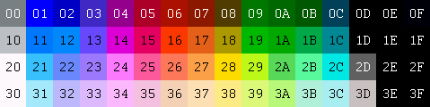
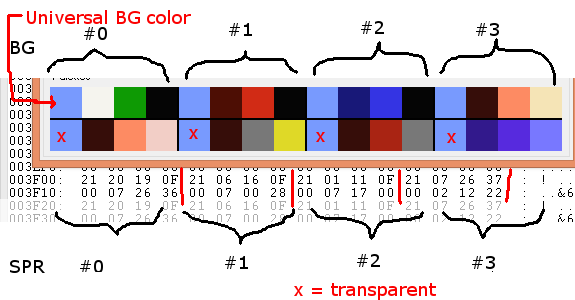
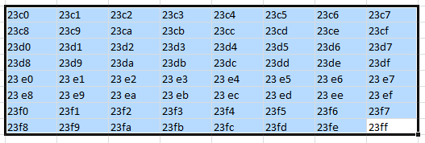
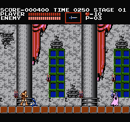
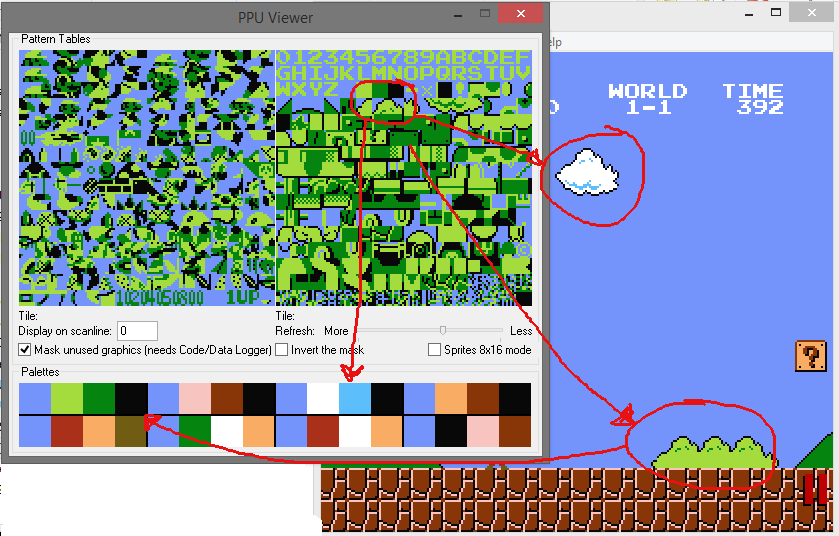
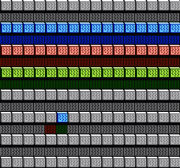

05、调色板
关于NES调色板的信息

一共64中颜色可用（0-$3F）,但其中很多都是黑色。neslib要求你使用 $0F表示黑色，$30表示白色。
不要使用xD颜色，尤其是 $0D (他会让一部分电视出问题，油管有视频)
https://www.youtube.com/watch?v=3fhyX3HdVcg
PPU调色板的地址是 $3f00-3f0f。颜色索引 #0 （PPU中的位置是 $3F00 ）是通用背景颜色。其他3个调色板的0号位颜色和第一个调色板的0号位的颜色相同。
有4个背景调色板（4个精灵调色板），4个子调色板。
U表示通用颜色（说白了下面4个位置的U都是一个颜色，切必须是一样的颜色）
U123 U123 U123 U123
屏幕上显示的有13中颜色。
精灵的每个贴图块只能使用3种颜色，0号位置的数值表示的是透明度。精灵使用PPU调色板地址在 $3F10-3F1F，你可以使用12种不同的颜色。

到目前为止，我们只使用了1种调色板（4种颜色），所以让我们使用所有的bg调色板制作一些东西。
您可以使用pal_all() 更改整个调色板（32个字节），
或使用pal_bg() 更改16字节背景调色板，
使用pal_spr() 更改16字节精灵调色板。
只需传递一个16字节的数组。你可以用pal_col(index, color)（索引，颜色）改变1种颜色，其中index是0-$1f。
下一页将有一个pal_col示例（精灵碰撞）。
调色板位于PPU中，并且在PPU渲染时无法写入，所有neslib调色板函数都写入缓冲区，缓冲区仅在v-blank期间复制到PPU（在nmi代码中）。因此，随时都能开关屏幕和调用这些功能。
（作者意思就是开关屏幕和上面的函数随便用，nmi代码里会判断v-blank并从缓存中取出放到PPU里）
背景属性表
在PPU中，每个名称表（tilemap）的末尾是属性表。对于地图#0，那是$23c0-$23ff。他们可以拥有的唯一“属性”是调色板选择，因此，您可以将其视为调色板表。
名称表只有64个字节可用于调色板选择，因此可以生成8×8网格。每个字节代表BG的32×32块。每个字节进一步分为2个比特段，每个2比特代表背景的16×16个块。

因此，每个磁贴都没有自己的调色板选择。您只能为4（2×2）个图块定义调色板选项。
尝试使用NES屏幕工具并尝试更改调色板，您可以立即看到它。
大多数游戏只是以16×16的块为单位设计游戏。我也是这样做的。

注意地板块和窗口块是如何精确地为16×16像素。列正好是32像素宽。窗帘区域正好是32像素宽。
有多个选项可供选择，扩展了我们的tileset，因为我们可以通过更改其调色板为不同的对象重用相同的tile。看看云和灌木丛。他们在顶部使用相同的瓷砖。

同样，1个属性字节影响16×16块。每块2位。所以，属性字节的布局就像这样，按位......
属性字节中的44332211位
11 22
11 22
33 44
33 44
因此，如果位44变为00，则该块将使用第0个调色板。如果22变为01，它将使用下一个调色板等。
所以，我在NES屏幕工具中做了一个背景。整个图片是灰色的，使用调色板＃0，但代码用填充写入属性表，更改调色板选项。
请注意，我使用 get_at_addr(0,0,0) 来计算属性表中的地址。然后使用vram_fill() 设置属性字节。

在游戏中期，属性表很难修改......这里涉及位移和屏蔽的问题。
许多游戏只是避免更改它，除非作为滚动引擎的一部分。您可以将游戏设计为32×32块，您只需更改一个完整字节，而不必担心位移。
我写个方法 vram_put() 来改变1个较低的属性字节，这样你可以看到它的大小和能力。
vram_put(0xe4); // 放入1个字节 1110 0100
现在，如果在NES屏幕工具中创建背景，只需将属性字节的名称表保存为压缩的rle，并在游戏加载时将其复制。
https://github.com/nesdoug/06_Color/blob/master/color.c
https://github.com/nesdoug/06_Color
我的库中有一部分是数据元处理，可以处理属性字节。